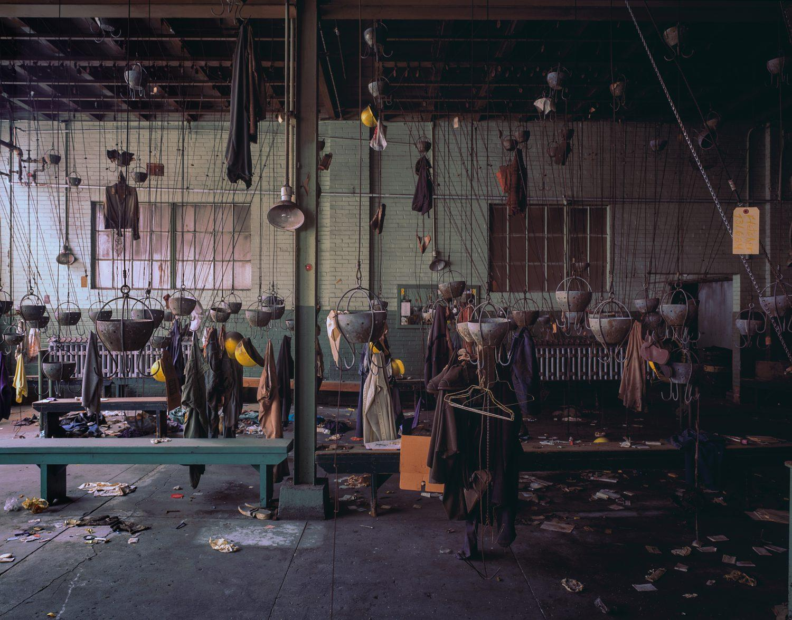

SOCIEDAD
Capital humano

¿Cuánto vale una vida humana?
Es una pregunta que parece absurda. Una vida no debería tener precio. Sin embargo, vivimos en un mundo donde muchas veces nuestro valor parece depender de cuánto dinero podemos generar, cuánto podemos producir y qué tan útiles somos para alguien más.
Imagina a un padre que lleva veinte años trabajando en la misma empresa. Durante todo ese tiempo se ha levantado temprano, ha regresado cansado a casa y se ha perdido cumpleaños, reuniones familiares y momentos que nunca podrá recuperar. Lo ha hecho porque tiene una familia que alimentar, una casa que pagar y personas que dependen de él.
Un día, la empresa decide que necesita reducir costos. Su puesto desaparece y alguien más podrá realizar el mismo trabajo por menos dinero. Veinte años de esfuerzo terminan resumidos en una decisión administrativa. Para la empresa es un ajuste necesario. Para él puede significar no saber cómo pagará la renta el próximo mes.
Y mientras la empresa continúa funcionando, en alguna casa hay una familia intentando entender qué va a pasar ahora.
Eso es lo que muchas veces olvidamos cuando hablamos de economía. Detrás de cada despido, cada reducción salarial y cada decisión tomada para maximizar ganancias hay personas cuyas vidas pueden cambiar por completo.
Hablamos de trabajadores como si fueran números. Recursos humanos, fuerza laboral, capital humano. Palabras que pueden resultar útiles para explicar cómo funciona una economía, pero que también pueden hacernos olvidar lo que realmente representan.
Una persona no es solamente lo que produce.
Es alguien que quizás llega a casa demasiado cansado para jugar con sus hijos. Alguien que tiene que elegir entre pagar una consulta médica o comprar comida. Alguien que lleva años soportando un trabajo que detesta porque no puede darse el lujo de quedarse sin ingresos.
Y lo más triste es que muchas de estas personas no están buscando hacerse ricas. Solamente quieren vivir tranquilas.
Quieren llegar a fin de mes sin miedo. Tener tiempo para sus familias. Poder enfermarse sin sentir que están poniendo en riesgo su futuro. Quieren disfrutar de una vida que no esté completamente organizada alrededor de la necesidad de trabajar.
Pero en un mundo donde el dinero es la prioridad, incluso estas cosas pueden parecer privilegios.
Nos enseñan desde pequeños que debemos estudiar, esforzarnos y prepararnos para conseguir un buen empleo. Que si trabajamos lo suficiente podremos construir una vida estable. Sin embargo, nadie nos garantiza que todo ese esfuerzo será recompensado.
Puedes hacer las cosas bien y aun así perderlo todo. Puedes dedicar tu juventud a construir una carrera y descubrir años después que tus habilidades ya no son tan necesarias. Puedes entregar gran parte de tu vida a una empresa y ser reemplazado en cuanto resulte más conveniente.
Y entonces aparece una sensación difícil de explicar. La de haber dado tanto de ti para descubrir que, al final, eras mucho más reemplazable de lo que imaginabas.
El capital no se preocupa por los individuos. No conoce el nombre de tus hijos, no sabe cuánto te costó levantarte esa mañana ni entiende lo que significa llegar a casa y fingir que todo está bien para no preocupar a tu familia. Su lógica es otra: crecer, competir y generar más.
Eso no significa que todas las personas que dirigen empresas sean crueles o indiferentes. Significa que hemos construido una economía donde muchas decisiones se toman pensando primero en los resultados y después en las consecuencias humanas.
Y esas consecuencias no siempre aparecen en los informes financieros.
No aparece el padre que empieza a dormir menos porque teme perder su empleo. La madre que trabaja horas extra y siente que sus hijos están creciendo sin ella. El joven que abandona sus sueños porque necesita ayudar económicamente en casa. Tampoco aparecen las conversaciones incómodas alrededor de una mesa cuando el dinero empieza a faltar.
Son pequeñas tragedias cotidianas que rara vez reciben atención porque se han vuelto demasiado comunes.
A veces incluso terminamos culpándonos por no poder seguir el ritmo. Si estamos cansados, pensamos que debemos organizarnos mejor. Si no ganamos suficiente, sentimos que nos faltó esforzarnos. Si perdemos nuestro trabajo, comenzamos a preguntarnos qué hicimos mal.
Como si todo dependiera únicamente de nuestras decisiones y no también de las condiciones en las que vivimos.
No se trata de decir que el trabajo no importa o que las empresas no necesitan generar ganancias. Se trata de cuestionar por qué hemos llegado a aceptar que el bienestar de las personas puede sacrificarse tan fácilmente cuando hay dinero de por medio.
Porque detrás de cada trabajador hay una vida que no se detiene cuando termina su jornada. Hay personas esperando en casa, preocupaciones que nadie conoce y momentos que no se pueden recuperar.
Quizás lo más doloroso de todo esto es que hemos comenzado a normalizarlo. Escuchamos que cientos de personas perdieron sus empleos y seguimos con nuestro día. Vemos cifras, porcentajes y noticias sobre crecimiento económico, pero pocas veces pensamos en las historias que quedan detrás.
Y algún día, cualquiera de nosotros podría convertirse en una de esas cifras.
Porque al final, ¿de qué sirve construir una economía cada vez más grande si las personas que la sostienen tienen cada vez menos tiempo, tranquilidad y oportunidades para vivir?
El progreso no debería medirse solamente por cuánto dinero somos capaces de generar, sino también por cuántas vidas podemos mejorar.
Porque una vida humana debería valer mucho más que lo que es capaz de producir.
Volver a artículos